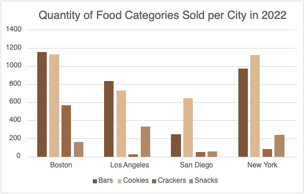
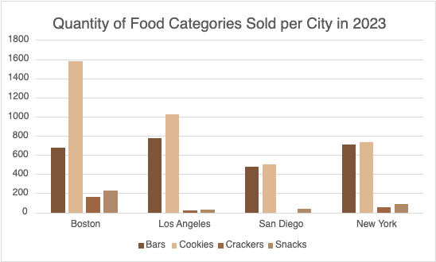

The graph shows that bars have the most sales in Boston and Los Angeles and cookies have the most sales in San Diego and New York. The lowest sales are snacks in Boston and New York and crackers in Los Angeles and San Diego. This shows that an increase in production for bars and cookies is recommended for 2023.

There has been a decrease in the purchase of goods from the year 2022. The least goods wanted are crackers, with San Diego having zero sales. In comparison to last year, most sales across each four cities are cookies. Least sales across each four cities are crackers.